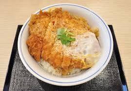

Katsu Don

is a popular Japanese food,
a bowl of rice topped with a deep-fried breaded pork cutlet, egg, vegetables,
and condiments
Recipe for a popular Japanese rice bowl, also known as Katsudon. Garnish with sliced green onions.
Ingredients
⅔ cup prepared dashi stock
2 teaspoons white sugar
2 teaspoons Mirin
1 tablespoon vegetable oil
1 small onion, chopped
2 fried breaded pork chops, cliced into strips
2 eggs, beaten
2 cups cooked short grain rice
Steps
- Mix dashi, sugar, mirin, soy sauce, and salt together in a small bowl
- Heat vegetable oil in a small skillet over medium heat. Add onion; cook and stir until translucent, about 5 minutes. Stir in dashi mixture. Lay pork slices carefully on top of the onions. Drizzle eggs around the slices. Cover skillet and cook until eggs are set, about 2 minutes
- Divide rice between 2 bowls. Top each with half the onions, eggs, and pork slices.